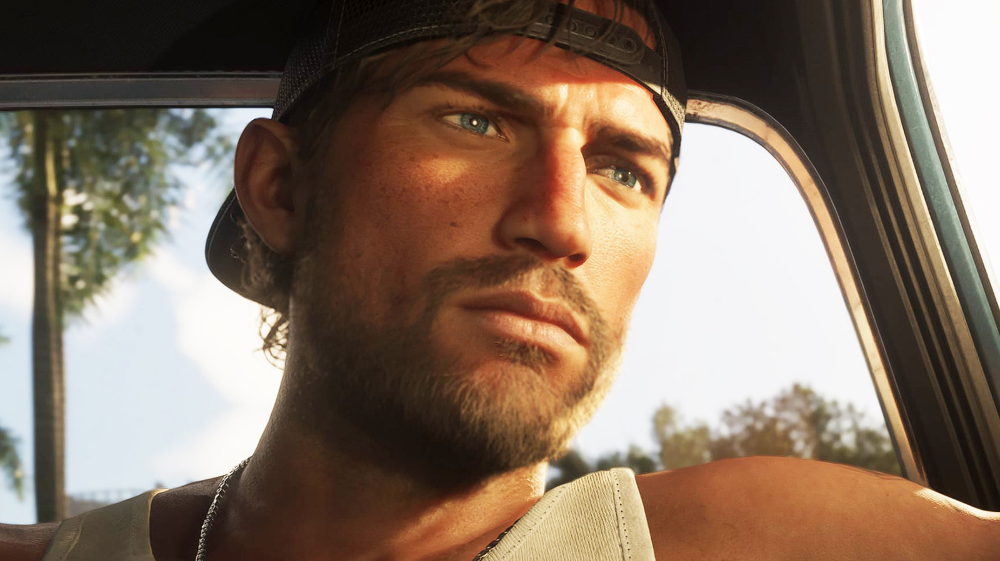
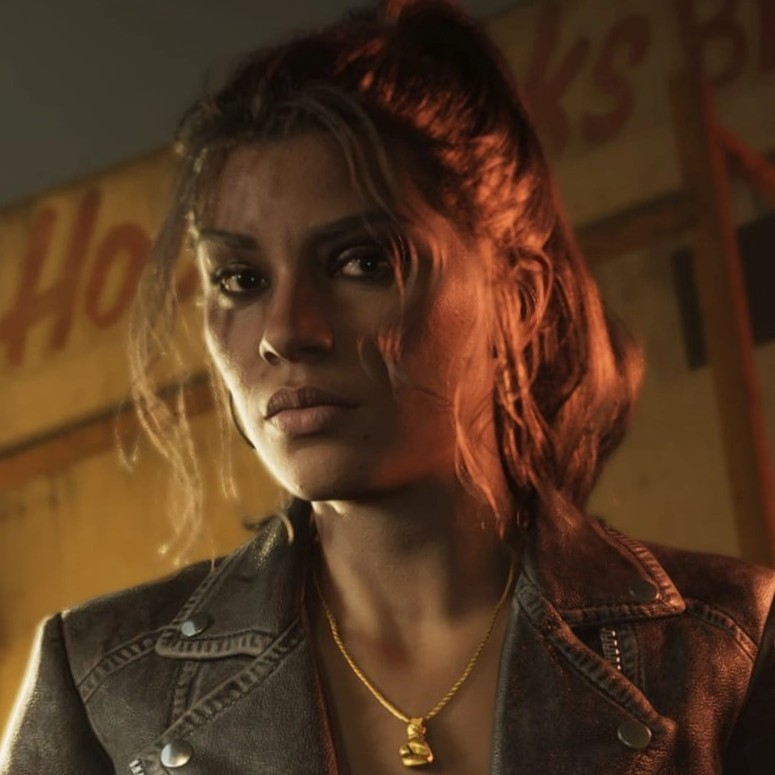
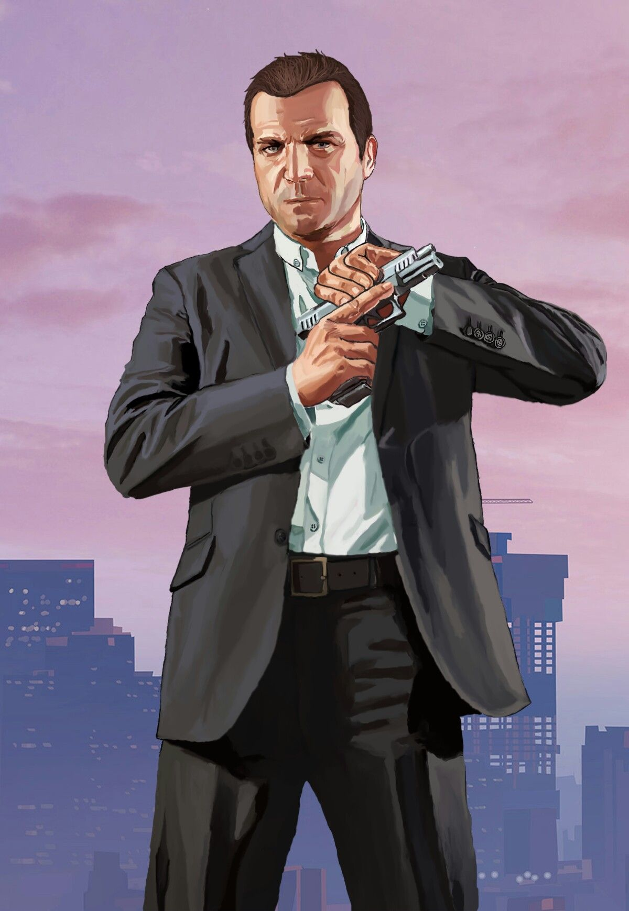
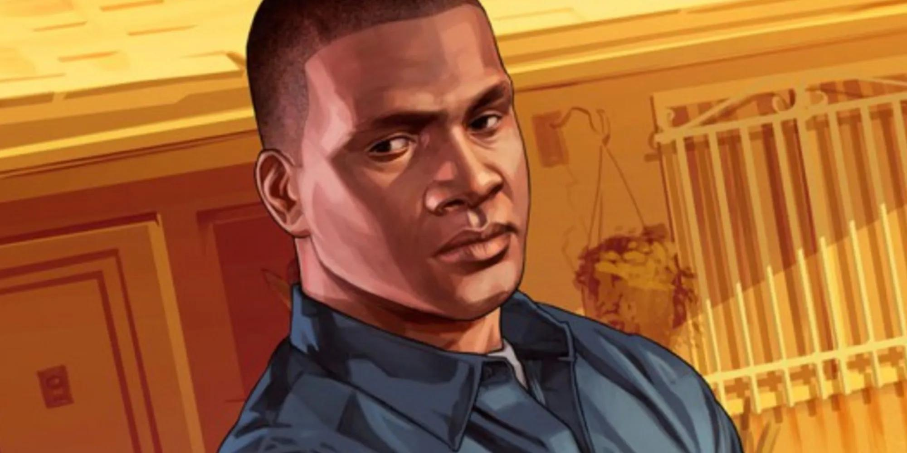
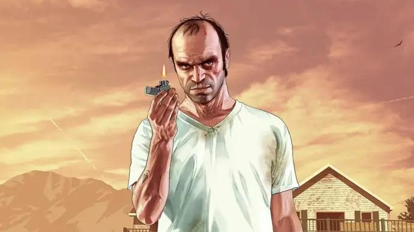

Grand Theft Auto V × Grand Theft Auto VI · The Full Cast
Hover a portrait · Hear their voice




Crystallize Gallery
Scroll sideways · Hover a card for its character's voice · Tap to open the project
Next stop: an interactive companion. Lucia is waiting below — say hello and ask about the cast, the cities and the stories.
System Online
“Hey, I'm Lucia — your companion on this ride through Leonida and Los Santos. Ask me about Jason, Michael, Franklin, Trevor, or the gallery above.”
05 · World · Systems · Los Santos & Leonida
| CITIES | Vice City, the Leonida Keys, Port Gellhorn, Mount Kalaga |
| STATE | Leonida — beaches, swamps, highways and neon streets |
| WORLD | Living traffic, wildlife, weather and crowds |
| GTA VI | Jason Duval & Lucia Caminos — one crew, one score |
| GTA V | Michael De Santa, Franklin Clinton & Trevor Philips |
| STRUCTURE | Switching stories inside one shared world |
| WANTED | Five-star heat and a full police response |
| VEHICLES | Cars, boats, bikes and aircraft |
| ACTIVITIES | Heists, side hustles and free-roam exploration |